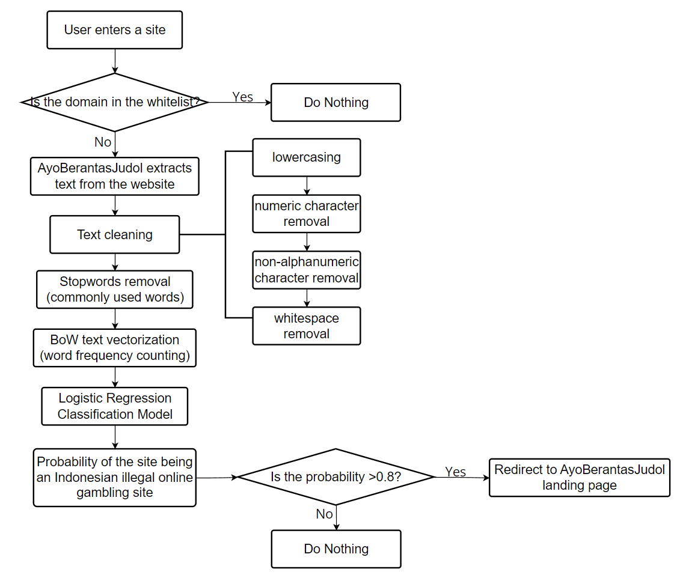
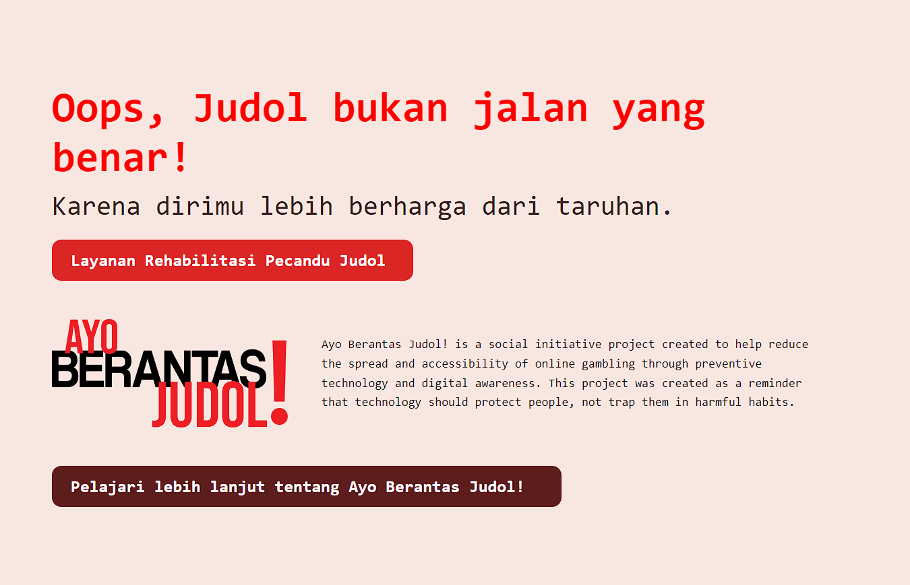

May 2026
Indonesia's Minister of Communication and Digital Affairs had recently reported that around 200,000 children had already been exposed to online gambling. Pusat Pelaporan Analisis Transaksi Keuangan (PPATK) have also reported that the total transaction value of online gambling in Indonesia reached a shocking amount of Rp 327 trillion by the end of 2023.
Ayo Berantas Judol is a web extension that I developed to help identify and block access to illegal gambling sites in Indonesia, within less than one second.
Ayo Berantas Judol is powered by a text-based machine learning classifier model that I trained using real-world Indonesian gambling site data. The model is designed to analyze the text content of websites and determine whether they are likely to be illegal gambling sites.

The extension works by combining Bag of Words vectorization and a Logistic Regression model to analyze the text content of websites. When a user visits a website, the extension first checks if the domain belongs to the whitelist of safe sites. If the domain is not on the whitelist, the extension then checks the text content of the website by putting it through the machine learning model. If the model predicts that the website is likely to be an illegal gambling site, the extension will automatically redirect the user to a warning page.

The dataset used to train the machine learning model in this extension consists of real-world Indonesian gambling site data. I collected a large number of websites that are known to be illegal gambling sites in Indonesia, as well as a set of safe websites that are not involved in any illegal activities. The dataset was then preprocessed and used to train the logistic regression model to accurately classify websites as either illegal gambling sites or safe sites.
To get a feel for this fully functioning extension, you may click the link below to access the GitHub repository of the Ayo Berantas Judol web extension: Ayo Berantas Judol GitHub Repository
To read more about this project, please click the link below for the full article: Ayo Berantas Judol Article